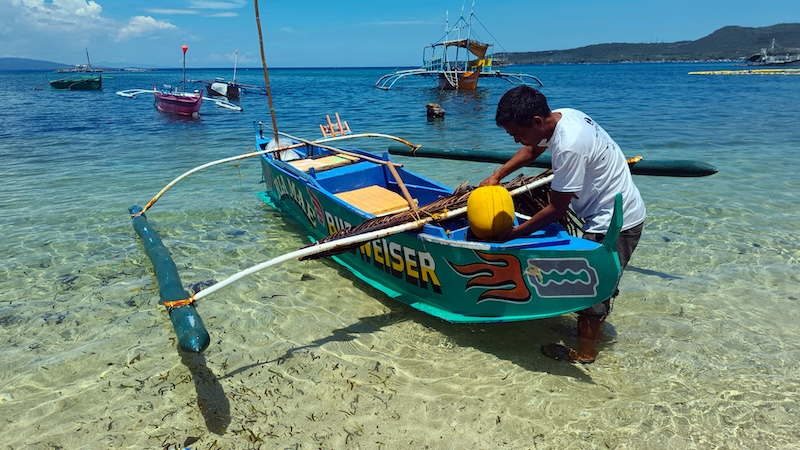

The Fragile Calm: Island Heritage

Generations of Filipino fisherfolk and farmers developed deep ancestral rhythms aligned with the monsoon winds (Amihan and Habagat). Our coastal mangrove belts naturally damped ocean swells, while traditional stilt architecture respected high tides.
36,289 km Coastline
60% Coastal Population